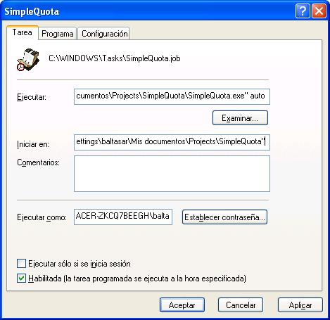

Es interesante modificar el programa para que éste se ejecute sin supervisión,
una vez que, lógicamente, ya todas las tareas se han definido correctamente, y
probablemente, se ha comprobado su correcto funcionamiento empleando el
modo interactivo.
Efectivamente, SimpleQuota soporta un modo automático que se ejecuta
cuando al programa se le pasa el parámetro "auto" durante la ejecución.
Utilizando este truco, es posible apuntar la tarea en el servicio de tareas
programadas de Windows, accesible en el Menú de inicio >> Accesorios >>
Herramientas del sistema >> Tareas programadas.

Sólo es necesario indicarle al servicio de tareas programadas, una vez creada la
nueva tarea, el nombre del programa (típicamente c:\archivos de
programa\SimpleQuota\simplequota.exe), y la periodicidad deseada.